Lab 5: Digital Multimedia
Goals
Learn about...
- Resizing images
- Changing JPG image quality
- Cropping images
- Re-coloring images
Pre-lab
Pre-lab Reading and Activity
- None
In-lab
Info
Working with others
You should not collaborate with anyone outside of the designated two-hour lab session.
Preparation
- Always make sure you save your lab file in the appropriate folder, i.e., lab5.
- For file names, only use lowercase letter and never use spaces.
Activity
You can work together with a partner during lab. But you must complete this part of the lab on your own. You should not collaborate with your partner outside of the designated two-hour lab session.
Resizing/Scaling Images
In the section, we are going to progressively resize/scale images to better understand the relationship between image resolution and file size.
- Create a folder called lab5.
- Open the GIMP program. You can find it by searching on the start bar.
- Download img4000.jpg to your lab5 folder by right-clicking and selecting "Save As..."
- Note that this image is 4000px wide by 3000px tall and approximately 5.8MB.
- Open the image that you just saved using GIMP. Use the top menu (File -> Open) and navigate to your lab5 folder.
- So you can see the entire image, select the top menu (View -> Zoom -> Fit Image In Window)
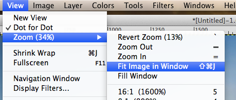 - Next, we are going to create progressively smaller versions of this file to better understand the relationship between image resolution and file size.
- Resize the image by selecting the top menu:
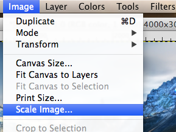 - Set the width to 3000px. Note that the height should change proportionally to 2250px.
- Export the image by selecting to top menu:
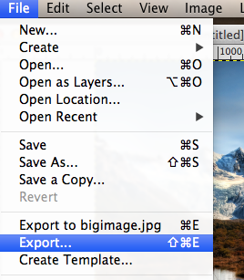 - Make sure you save the image in your lab5 folder and rename the file img3000.jpg:
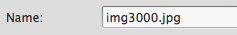 - Make sure the quality level is 95:
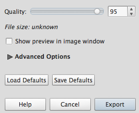
Note: 100 is the highest quality level. - Repeat this process (Steps 8-12) and create the following smaller versions. Due to upgrades to compression algorithms, the sizes of each file may not be exactly the same as these, but you should notice a progression of smaller and smaller sizes.
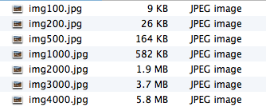
{kind=link}
Changing Image Quality
In the next section, we are going to progressively Export images using different quality values to understand the relationship between image quality and file size.
- Open the original img4000.jpg image. Use the top menu (File -> Open) and navigate to your lab5 folder.
- So you can see the entire image, select the top menu (View -> Zoom -> Fit Image In Window)
- Export the image by selecting to top menu:
- Make sure you save the image in your lab5 folder and rename the file qual90.jpg.
- Make sure the quality level is 90.
- Repeat this process (Steps 3-5) and create the following smaller versions:
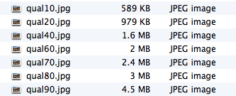
Understanding File Resolution vs. Display Resolution
- Download test.html to your lab5 folder by right-clicking and selecting "Save As..."
- View test.html in Chrome to understand what it is doing. Each file has a different native resolution. We are testing how each file looks when displayed at 400px X 300px
- Open test.html in Notepad++
- For each image, add the file size as we did for the 4000px image, i.e., 4000px (5.8MB).
- Based on this information, which file is the best to use when displaying the image at 400px X 300px? Explain your answer.
- Put your answer right after the text of the image you selected. For example, "1000px (582 KB) is the best because..."
Understanding JPG Quality
- In Notepad++, rename test.html to test2.html.
- For each image, change the src to display the "qual" images instead of the "img" images. For example, change "img4000.jpg" to "qual90.jpg"
- Be sure to include all the quality images:
- For each image, change the info from the width to the quality level. For example, change "4000px" to "Quality 90"
- Update the file size so it matches the actual file. For example, update the first image to "Quality 90 (4.5MB)"
- In the img tag, change the display width from "400" to "4000" so you can see the images as their full native resolution.
- Examine test2.html in Chrome.
- Which image is the first one where you can see a visible loss of quality.
- Note that the image with the next higher quality level may be ideal because it is smaller than the "Quality 90" image but may not be noticeably different. This is what we call an ideal quality level.
- Which image do you think has the ideal quality level, i.e., smallest file size with no noticeable loss of quality?
- To indicate your answer, make the text above the image bold and underlined. For example, if you think the "Quality 70 (2.4MB)" is ideal, use the strong and u tags to highlight this text.
Color Balance
In the next section, we are going to change the color of an image to understand GIMP's capabilities to alter the color of an image.
- Open the img1000.jpg image. Use the top menu (File -> Open) and navigate to your lab5 folder.
- So you can see the entire image, select the top menu (View -> Zoom -> Fit Image In Window)
- Adjust the color balance:
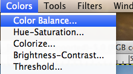 - Make the highlights more red:
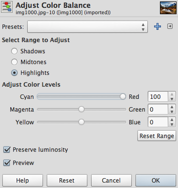 - Export the image by selecting to top menu:
- Make sure you save the image in your lab5 folder and rename the file redhighlights.jpg.
- Make sure the quality level is 90.
- Repeat the process (Steps 1-7) and create two other versions by changing the color balance:
greenshadows.jpg (make the Shadows more green) and
bluemidtones.jpg (make the Midtones more blue)
Color Hue, Lightness and Saturation
In the next section, we are going to change the Hue, Saturation and Lightness of an image to understand these properties.
- Open the img1000.jpg image. Use the top menu (File -> Open) and navigate to your lab5 folder.
- So you can see the entire image, select the top menu (View -> Zoom -> Fit Image In Window)
- Adjust the color Hue-Saturation:
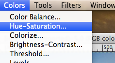 - Set the color saturation to the minimum level:
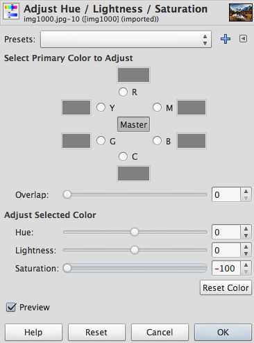 - Export the image by selecting to top menu:
- Make sure you save the image in your lab5 folder and rename the file saturationmin.jpg.
- Make sure the quality level is 90.
- Repeat the process (Steps 1-7) and create five other versions by changing the hue, saturation and lightness:
saturationmax.jpg (set Saturation to maximum level) and
lightnessmin.jpg (set Lightness to minimum level)
lightnessmax.jpg (set Lightness to maximum level)
purplesky.jpg (set Hue so that the sky is purple)
bluegrass.jpg (set Hue so that the grass is blue )
Deliverables
Create a zip file for your lab5 folder.
Upload lab5.zip to Blackboard.